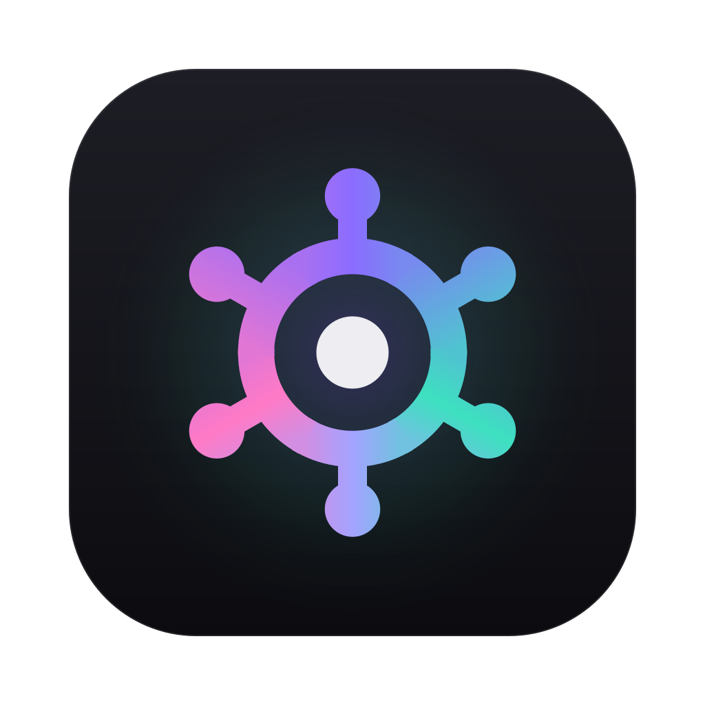

Brand guide
You hold the wheel. The AI does the work.
Skillerr is a browser that the AI you already use can drive, while you watch every step and can stop it at any time. The brand says one thing: a person is in control. This page shows how to keep it saying that.
Logo
The mark is a ship's wheel drawn from simple parts: a ring, six handles, and a hub at the centre. The hub is you. The wheel turns around you, never the other way round. When an AI is acting, the wheel takes on the aurora. The hub always stays neutral.
Mark (primary)
One colour, drawn in currentColor, so it takes the text colour around it. Use it in the product chrome, docs, nav bars, favicons and anywhere Skillerr is simply being named.

Aurora mark
For moments that show an AI acting: the app icon, the hero of the landing page, a "watch it work" demo. It may turn slowly, like the aurora ring in the app. Use it once per screen at most.


Wordmark
The mark, then “Skillerr” in the system sans, bold, with the gap between them equal to half the mark’s width. Keep the mark and word the same colour.

App icon
A 1024 px rounded square on the app's chrome colour, with the aurora mark. The app is where the AI acts, so its icon wears the aurora. The favicon is the same idea cropped to a small tile.


Clear space and minimum size
Give the logo room so it reads as a sign, not as decoration.
Clear space: x = a quarter of the mark's height
Keep at least x free on every side, where x is 25% of the mark's height. For the wordmark, x is 25% of the wordmark's height. Nothing else (text, edges, other logos) goes inside that space.
Minimum sizes
- Mark: 16 px. It was drawn to hold at favicon size.
- Aurora mark: 24 px. Below that the colours blur together; use the one-colour mark or the favicon tile.
- Wordmark: 16 px tall.
- Favicon tile: 16 px, used only as a favicon.
Colour
These are the product's own tokens from src/ui/ui.css. Dark is the default; light follows the system setting.
The aurora rule. The aurora (#8b6cff → #3de0c0 → #ff7ac6) means an AI is acting. Everything the human does and owns stays neutral. In the app it rings the page, pulses on the tab being worked on, and edges the floating bar. On the web and in print, use it only for the one or two moments that show the AI at work.
Aurora
Neutrals (the values change with light and dark mode)
Status
Warn means "waiting for you": approvals and pauses. Danger is for destructive actions and errors. Accent is a single violet for focus and the primary action, used without the full gradient.
Type
Skillerr uses the system font, the same one as the app, so it looks native on every computer and costs nothing to load. Inter is the fallback where no system UI font is available.
claude mcp add skillerr …Stack: -apple-system, BlinkMacSystemFont, "SF Pro Text", "Inter", "Segoe UI", sans-serif. Use sentence case for headings and buttons. Use curly quotes around the names of things on a page, as the activity log does.
Voice and tone
Talk like a calm, capable co-pilot. Plain words, short sentences, the facts. The person is always the one in charge, and the copy should make that obvious.
Plain
Say what happens, in words anyone would use. "Skillerr clicked Search" beats "Skillerr executed an interaction on a UI element".
Honest
State the limits next to the features. If something doesn't work yet, say so. No invented numbers, users or quotes.
Human first
The AI helps; you decide. Write "you approve", "you can stop it", "you take over". Never suggest the AI replaces the person.
- Your AI already exists. Give it hands.
- Watch it work. Stop it any time.
- Waiting for you to approve a payment.
- Free. Bring the AI you already use.
- Prompt injection is still the main open risk, so sensitive steps wait for you.
- An autonomous agent that does your job for you.
- Set it and forget it.
- Revolutionary, magical, 10× your productivity.
- Completely safe. Nothing can go wrong.
- Trusted by thousands. (unless it's true and you can show it)
Do and don't
When in doubt, go neutral.
Use the aurora where the AI is acting, with the human's control (Take over) right next to it.
Put the aurora on buttons, pricing, nav or body copy. Those belong to the human, so keep them neutral.
Use the one-colour mark in the text colour for everyday UI, links and buttons.
Stretch, squash, outline or add shadows or glows to the mark. Scale it evenly.
Recolour the mark in status colours or new brand colours. It is neutral, or it wears the full aurora.
Keep the hub neutral in every version. The hub is the person, and the person never turns aurora.